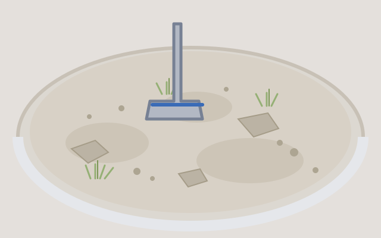

A basing recipe that takes four minutes a model
Your post

Bases are the cheapest way to make a unit look finished, and the slowest way to lose a weekend if you overcomplicate them.
The recipe is four steps: texture paste, a wash, a drybrush, then two tufts placed off-centre. Nothing here needs a second coat, and the whole batch dries while you eat lunch.
